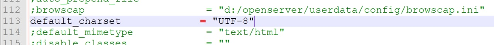

Після встановлення Open Server нами було змінено кодування на utf-8 у всіх HTML-файлах за допомогою тегу &lt;meta charset="UTF-8"&gt;
<br>
<br>Також був змінений пункт "default_charset" у файлі php.ini на значення UTF-8
<br>
<br>
У файлі php.ini
<br>

